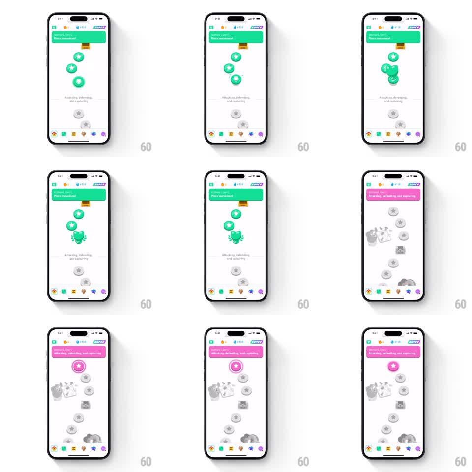

Media
Frame-by-frame

Rebuild this animation 1:1: Duolingo's unit-complete path transition - the green unit's finished nodes cluster and merge into a trophy shape, the path scrolls down, and the theme crossfades to pink as the next unit's banner ("Attacking, defending, and capturing") takes over with its first node highlighted.

Rebuild this animation 1:1: Duolingo's unit-complete path transition - the green unit's finished nodes cluster and merge into a trophy shape, the path scrolls down, and the theme crossfades to pink as the next unit's banner ("Attacking, defending, and capturing") takes over with its first node highlighted.
## Integration
Integration: stack-agnostic spec - springs given as stiffness/damping, timed motions as duration + curve; map every value to your framework and animation library of choice.
## Scene
White learning path. Top: green unit banner ("SECTION 1, UNIT 1 / Piece movement"), a winding path of green completed nodes (stars, chest, dumbbell icons) over gray upcoming nodes, tab bar. End state: the same path re-themed pink - banner now pink ("SECTION 1, UNIT 2 / Attacking, defending, and capturing"), the trophy node locked behind, and the next unit's first node glowing pink.
## Motion spec
Pattern: node-cluster trophy morph with theme-color handoff.
- The completed green nodes bounce in sequence up the path (each scale 1.0 -> 1.2 -> 1.0, 200ms, 80ms apart, cascading).
- The top cluster of nodes slides together and merges into a green trophy silhouette (morph over 400ms, ease-in-out) which locks with a small spin (rotate 0 -> 360deg, 400ms).
- The view then scrolls down the path (500ms, ease-in-out), grayed nodes passing by.
- Theme handoff: the green banner and accents crossfade to pink (300ms) as the new unit's banner slides in from the top (250ms).
- The next unit's first node pulses pink (scale 1.0 -> 1.15 -> 1.0, 400ms, twice) to signal "start here".
## Calibration
- The merge is a morph of the actual nodes, not a cut to a trophy graphic - the pieces visibly travel.
- Color handoff happens during the scroll, not after, so the two units feel like one continuous path.
## Reduced motion
Trophy appears via 200ms crossfade; scroll happens instantly; theme swaps with a 200ms fade.
## Don't miss
- Completed nodes keep their icons visible until the merge begins.
- The pink pulse targets exactly one node - the next lesson - not the whole path.